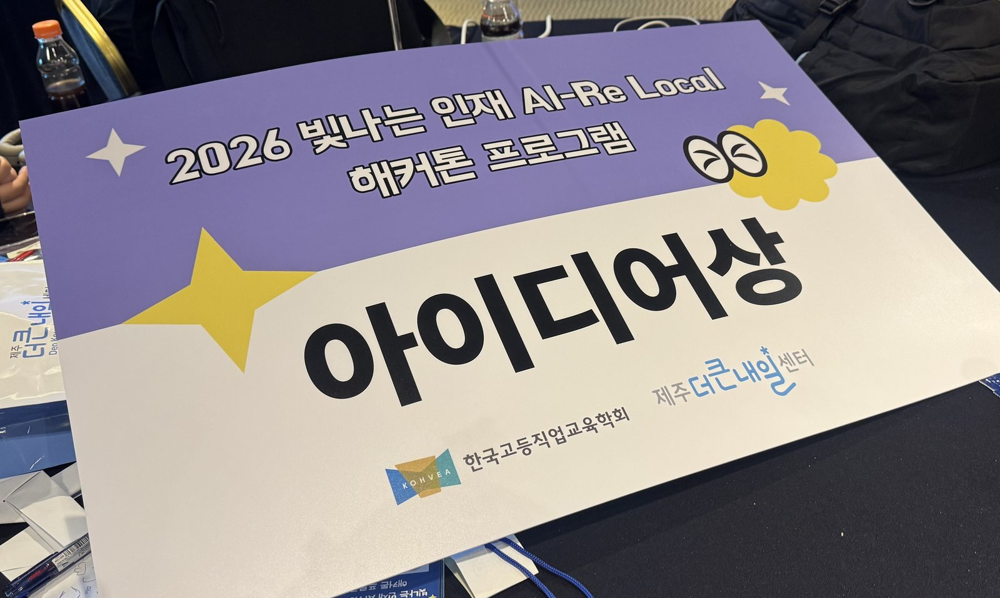

개요
외국인·고령자·시각장애인·어린이가 사진·음성·버튼으로 키오스크 주문을 혼자 끝낼 수 있게 돕는 서비스입니다.
제가 맡은 것은 화면 인식, AI 체인, 규칙 기반 폴백, 접근성입니다.
2박 3일 일정으로 만들어 아이디어상을 받고 팀 투표로 MVP 로 뽑혔습니다.
분석
핵심 사용자를 낯선 키오스크 앞에서 첫 조작을 시작하지 못하는 사람으로 잡았습니다.
대표 페르소나는 베트남 출신 28세 근로자입니다. 같은 설계가 고령자·시각장애인·어린이에게도 그대로 맞습니다.
요구사항 정의서 · 기능 정의서 · 테이블/API 정의서 · WBS로 문서화했습니다.
설계
말하기·누르기·사진 촬영·제보 네 가지 입력이 모두 AI 인식과 주문 구성 단계로 모입니다.
브랜드가 매핑돼 있으면 QR을 출력하고 매핑되지 않았으면 조작 가이드를
제공합니다.
모든 경로에서 화면 하단에 "직원에게 보여주기" 버튼이 상시 노출됩니다.

사진에서 메뉴·가격 추출
사진을 base64로 전송하면 모델이 메뉴명·가격·버튼 색·버튼 위치를 JSON으로 반환.
프롬프트에 Do not invent items. 명시. 불확실한 값은 null로 수신.
설정 한 줄로 provider 교체
운영은 kiosk.ai.provider=mindlogic 게이트웨이, 로컬은 ollama(llava). 설정 한 줄로 전환. AI가 없어도 데모가 끝까지 진행되도록 mock 프로바이더 준비.
Claude · GPT · Gemini · 규칙
모델 순서는 kiosk.ai.models 설정에 정의.
첫 성공 응답을 채택. 빠르게 판단만 하면 되는 좁혀가기 질문은 fast-models를 먼저 호출합니다.
전부 실패하면 규칙 기반(DB·사전) 폴백으로 내려갑니다.
거절과 단절을 구분
Result(content, reachable) 2필드로 모델 거절과 네트워크 단절을 구분. 거절이면 다음 모델, reachable=false면 체인 즉시 중단 후 규칙 기반 전환.
망 장애 시 모델 3개 불필요 호출 방지.
다국어 · 음성 · 큰글씨
KR/EN/中/VN 등 국기 즉시 전환, 글자·소리 크기 조절, 화면 아무 곳 5초 꾹 → 시각장애 음성 모드.
직원에게 보여주기
매핑 여부와 상관없이 어디서든 주문서를 정리해 직원에게 넘기는 공통 경로.
주요 기능
담당 파트 (정상연)
기획 주도
- 문제 정의·페르소나·화면 흐름 설계
- 요구/기능 정의서 작성
화면 인식 · AI 체인
- 비전 모델 연동 — 게이트웨이·Ollama를 프로바이더로 추상화
- Claude·GPT·Gemini 체인 + 규칙 폴백
접근성
- 다국어·음성 안내·큰글씨 모드
- 시각장애 음성 모드(5초 꾹)
데모 · 안전망
- 데모 키오스크(카페·병원·주민센터)
- "직원에게 보여주기" 공통 안전망
AI로 프론트엔드 · 산출물 제작
- Claude·Canva로 UI 시안을 잡고 Figma 기준으로 화면 구현
- 기획서·소개영상·발표 자료까지 AI로 만들어 3일 안에 끝냄
개발과 평가
평가셋을 돌리고, 확인하지 못한 항목까지 그대로 적었습니다.
키오스크 사진 52장을 넣었는데, 돌리던 날 게이트웨이 키가 만료된 상태였습니다.
그래서 폴백이 실제로 도는지는 확인했고, 비전 인식 정확도는 확인하지 못했습니다.
평가 기준
브랜드별 키오스크 사진 52장을 넣었습니다. 응답이 스키마를 지키는지와 어느 단계에서 답이 나오는지를 봤습니다.
비전 모델 세 개를 차례로 부릅니다. 셋 다 실패하면 규칙 기반 결과를 돌려줍니다.
어느 단계에서 답이 나왔는지가 source 필드에 담겨 오니 따로 계측할 필요가 없습니다.
키오스크 화면 사진 52장을 로컬 서버에 올려 채점했습니다.
recognized placeType narration items source가 다 온 비율source가 ai로 온 비율mock)로 답한 비율평가셋 구성
맥도날드 28장, 맘스터치 11장, 메가커피 5장, 빽다방 5장, 공항 3장을 씁니다.
브랜드와 화면 단계가 겹치지 않게 골랐습니다. 글씨가 반사되거나 화면이 기울어진 사진도 넣었습니다.
문제 해결
com.jingdari.omong을 controller · service ·
dto · model로 나눴습니다.
AI 호출은 프로바이더 인터페이스로 감싸, 실패하면 다음 단계로 내려가도록 설계했습니다.
비전 모델·LLM 지연 시 실행 도중 화면 정지 위험.
AI 응답에만 의존하는 단일 경로.
프로바이더를 mock으로
두면 0단계 DB·사전 폴백만으로 화면읽기·번역 동작.
AI 없이도 전체 흐름 시연 가능.
매핑되지 않은 키오스크에서 주문 자동 구성 실패.
모든 브랜드의 사전 매핑은 불가능.
브랜드를 몰라도 일반 메뉴판으로 인식.
모든 경로에 "직원에게 보여주기" 상시 노출로 직원에게 연결.
음성 모드에서 마이크 권한이 막히면 입력 자체가 불가.
브라우저 권한 상태를 확인하거나 안내하는 처리가 없음.
권한 상태 로그 점검 후 음성 안내 흐름 보완.
권한 거부 시 버튼 입력으로 대신하도록 안내.
망이 끊긴 상황에서도 모델 3개를 순차 호출.
규칙 폴백까지 도달하는 데 지연 누적.
호출 실패를 한 종류로만 처리.
모델이 거절한 경우와 게이트웨이에 닿지 못한 경우가 동일 취급.
MindLogicClient 반환을 Result(content, 2필드로 분리.
reachable)
거절이면 다음 모델,reachable=false면 체인 즉시 중단 후 규칙 기반으로 전환.
AI 폴백 후 규칙 기반 추천에서 결과가 0건이 되면 화면에 아무것도 표시되지 않음.
RuleEngine의 drink·taste 2축 조건을 모두 만족하는 메뉴가 없는 경우 존재.
필터 결과가 비면 전체 후보로 복귀.
화면이 비는 상황 자체를 제거.
측정 범위
게이트웨이 키가 만료돼 모델 세 개가 전부 401을 냈습니다. 규칙 폴백 경로만 재졌습니다.
측정 항목
| 축 | 확인 | 결과 | 왜 |
|---|---|---|---|
| 응답 스키마 | 확인함 | 100% (52/52) | 필수 필드가 다 왔는지는 폴백 경로에서도 판정된다 |
| 응답 속도 | 확인함 | 중앙값 729ms | 규칙 폴백만 타는 경로라 AI 지연이 안 섞였다 |
| 화면이 멈추지 않는가 | 확인함 | 100% (52/52) | 모델 세 개가 다 막힌 상태에서도 52건 전부 응답이 나왔다 |
| 비전 인식 정확도 | 확인 못 함 | — | 게이트웨이 키가 만료돼 Claude·GPT·Gemini 3단이 전부 401. 모델이 사진을 읽은 건이 0건이라 정확도를 낼 분모가 없다 |
브랜드별 키오스크 사진 52건 · 로컬 서버
이 표의 100%는 AI 정확도가 아닙니다. AI 응답이 한 건도 없는 상태에서 규칙 폴백이 52건을 다 받아 낸 값입니다.
2박 3일 해커톤이라 심사 중에 화면이 멈추지 않는 것을 1순위로 잡았습니다. 그건 이 측정으로 확인됩니다. 인식 정확도는 이 절에 없습니다.
측정 결과
마지막 실행의 전체 값입니다.
사진 인식 52건
| 지표 | 결과 | 통과 | 문항 |
|---|---|---|---|
| 응답 성공 · JSON 파싱 · 스키마 준수 | 100% · 100% · 100% | 셋 다 52/52 | 52장 |
| 1단(AI) 도달률 | 0% | 0/52 | 규칙 폴백이 52건 전부 받았습니다 |
로컬 서버 · 응답 시간 중앙값 729ms, p90 802ms
잴 때 게이트웨이 API 키가 만료돼 모델 세 개가 다 401을 냈습니다. 아래 표는 그 상태에서 나온 값입니다.
응답 단계 분포
| 단계 | 모델 | 비율 | 건수 |
|---|---|---|---|
| 1단 | claude-sonnet-4-6 | 0% | 0 |
| 2단 | gpt-5.2 | 0% | 0 |
| 3단 | gemini-3-flash-preview | 0% | 0 |
| 폴백 | 규칙 기반 | 100% | 52 |
모델 세 개가 모두 401을 냈는데도 52장 전부 같은 스키마로 응답했습니다. 중앙값은 729ms입니다.
폴백이 실제로 도는지를 확인한 기록입니다. 인식 정확도는 키가 살아 있어야 잴 수 있습니다.
웹 표준 측정
Lighthouse 데스크톱 3회 중앙값 · 대상 https://omong.o-r.kr/
W3C HTML 오류 1건 (규칙 1종).
접근성 96, 모범사례 100 으로 세 프로젝트 중 가장 높습니다. 큰글씨·음성·다국어를 처음부터 요구사항에 넣은 덕입니다.
성능은 다시 재도 61~66 으로 흔들려서 전후를 비교하지 않습니다.
배포 및 테스트
2박 3일 해커톤 일정으로, 심사 시간에 서비스가 정상 동작하는 것을 최우선 목표로 두었습니다.
테스트 코드를 늘리는 대신 AI 호출이 실패해도 화면이
멈추지 않는 경로를 코드로 확보했습니다.
server.port=${SERVER_PORT:8081}. EC2 보안그룹 인바운드에 해당 포트를 열어 두는 것을 설정 주석으로 남겼습니다${KEY:기본값} 꼴로 잡아 로컬과 서버가 같은 빌드로 돌아갑니다spring.profiles.include=secret으로 키 파일을 본 설정에서 떼어 냈습니다테스트 코드 1건
컨텍스트 로딩 확인용 OmongApplicationTests 1건.
3일 일정에서는 테스트를 늘리는 대신, 실패해도 데모가 끝까지 가는 경로 확보를 우선.
3중 폴백
화면 인식은 AI · 시드된 키오스크 DB · 재촬영 안내 3단.
메뉴 추천은 AI 체인 실패 시 RuleEngine. 규칙 필터 결과가 0건이면 전체 후보로 복귀해 빈 화면 방지.
언론 보도 · 수상
2026 빛나는 인재 AI-Re Local 해커톤에서 아이디어상을 받았고, 팀 안에서 MVP로 뽑혔습니다.
수상 내용은 언론에도 보도됐습니다.
